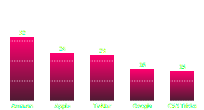
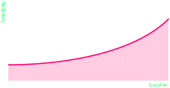
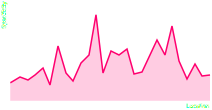
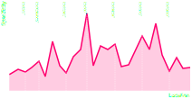

Hi, I'm @squidfunk
-
10+ years of debugging and fixing broken layouts
-
I like to build products front to back
-
I'm on the quest to solving cross-browser layout
-
I'm actively researching (i.e. deconstructing) CSS
This presentation is located at:
squidfunk.github.io/talks/css-cognitive-complexity
Yes. People are researching CSS
- 2018 – Automated Repair of Mobile Friendly Problems in Web Pages
- 2017 – Machine Learning and Evolutionary Computing for GUI-based Regression Testing
- 2017 – XFIX - An Automated Tool for the Repair of Layout Cross Browser Issues
- 2016 – Automated Reasoning for Web Page Layout
- 2016 – Defect Prediction for Cascading Style Sheets
- 2016 – Detecting and Localizing Visual Inconsistencies in Web Applications
- 2016 – Using Visual Symptoms for Debugging Presentation Failures in Web Applications
- 2015 – Code Smells in Cascading Style Sheets – An Empirical Study and a Predictive Model
- 2015 – Detecting Redundant CSS Rules in HTML5 Applications - A Tree Rewriting Approach
- 2015 – Detection and Localization of HTML Presentation Failures Using Computer Vision-Based Techniques
- 2015 – Tool Support for Cascading Style Sheets' Complexity Metrics
- 2014 – Automated Refactoring for Size Reduction of CSS Style Sheets
- 2014 – Discovering Refactoring Opportunities in Cascading Style Sheets
- 2014 – Finding HTML Presentation Failures Using Image Comparison Techniques
- 2013 – Visualizing Change Impact of Cascading Style Sheets
- 2012 – Automated Analysis of CSS Rules to Support Style Maintenance
- 2012 – On the Analysis of Cascading Style Sheets
- 2010 – CSS Code Quality - A Metric for Abstractness
- 2009 – Complexity Metrics for CSS
- ...
Easy to Learn, Hard to Master
-
Amazingly simple to read and write
-
Flexible and unopinionated architecture
-
Hard to control when code base is growing
-
Complexity must be managed strategically
Complexity
Computational Complexity
What resources (space and time) are necessary to solve a problem?
If computational complexity increases,
performance decreases
Cognitive Complexity
How difficult is the code to read and understand?
If cognitive complexity increases,
productivity decreases
What Could Possibly Go Wrong?
What's the background and text color of the first link?
a.ext {
color: white;
}
ul li:first-child a {
background-color: white;
}
header a {
background-color: grey;
color: black;
}
What Could Possibly Go Wrong?
What's the background and text color of the first link?
a.ext {
color: white;
}
ul li:first-child a {
background-color: white;
}
header a {
background-color: grey;
color: black;
}
Agenda
- Scope and Precedence
- Complexity Management
- Static Analysis
- Dynamic Analysis
Scope
The elements (i.e. subtrees) a rule applies to
Example
/* All links */
a { ... }
/* All external links */
a.ext { ... }
/* All external header links */
header a.ext { ... }
Precedence
The ordering of rules, in case multiple rules match an element
Algorithm
- Order rules by specificity
-
Order rules with same specificity by location
Specificity
A quadruple of numbers (e.g. [0, 0, 1, 1]) giving a rule weight
Calculation
-
1 if inline declaration, 0 otherwise
- Number of id selectors
-
Number of (pseudo-)class and attribute selectors
-
Number of (pseudo-)element selectors
Specificity
A quadruple of numbers (e.g. [0, 0, 1, 1]) giving a rule weight
Example
/* Specificity: [0, 0, 1, 3] */
nav a:hover::before { ... }
/* Specificity: [0, 1, 1, 2] */
ul#primary-nav li.active { ... }
Try the specificity calculator at
specificity.keegan.st
Scope and Precedence
A rule expresses scope and precedence at the same time
Example
/* Large scope, low precedence */
a { ... }
/* Medium scope, medium precedence */
a.ext { ... }
/* Small scope, high precedence */
header a.ext { ... }
What Could Possibly Go Wrong?
What's the background and text color of the first link?
a.ext {
color: white;
} /* [0, 0, 1, 1] */
ul li:first-child a {
background-color: white;
} /* [0, 0, 1, 3] */
header a {
background-color: grey;
color: black;
} /* [0, 0, 0, 2] */
Still not convinced?
Maximum number of matched selectors per element

Wait, there is more
Other factors that add to cognitive complexity
An incomplete list
- Inherited properties
-
Conditional rules (media and feature queries)
-
Browser compatibility
-
Browser bugs
Organisation Systems
BEM, OOCSS, SMACSS, Atomic CSS, ...
-
Guidance for large teams and code bases
-
Help keeping cognitive complexity low
-
Weird situations when followed religiously
-
Scope and Precedence issues still arise
Style Boundaries
Web Components, CSS Modules (CSS-in-JS)
-
Mitigate Scope and Precedence issues
-
Reduce or prevent accidental leakage
-
Mixing with global styles is cumbersome
-
Come with caveats (e.g. compatibility, duplication, ...)
Style Statistics
Analyse statistical properties of styles (#, avg, min, max)
Metrics
- Lines of code
-
Selectors per rule, declarations per rule
-
Number of colors, font sizes, box shadows, ...
-
...
Try the static analyser at
projectwallace.com
Style Statistics
Analyse statistical properties of styles (#, avg, min, max)
-
Can give a general idea of code base health
-
Good for deduplication (colors, shadows, etc.)
-
Often (mistakenly) called complexity analysis
-
Too coarse for complexity management
Specificity Graph
Visualise precedence (location and specificity)
a { ... }
header a { ... }
nav ul a { ... }
header ul li a { ... }
a.ext { ... }
nav a.ext { ... }
a.ext:visited { ... }
#home header a { ... }

How the specificity graph should look
Specificity Graph
Visualise precedence (location and specificity)
a { ... }
a.ext { ... }
a.ext:visited { ... }
header a { ... }
#home header a { ... }
header ul li a { ... }
nav ul a { ... }
nav a.ext { ... }

How the specificity graph actually looks
Specificity Graph
Visualise precedence (location and specificity)
a { ... }
a.ext { ... }
a.ext:visited { ... }
header a { ... }
#home header a { ... }
header ul li a { ... }
nav ul a { ... }
nav a.ext { ... }

How the specificity graph for a component architecture looks
Applied Specificity Graph
Visualise precedence per element (location and specificity)
Algorithm
- Match each rule with each element of a document
- Sort matches by precedence (low to high)
- Identify (and fix) drops in specificity
Selector Networks
Visualise of selector relationships per document
Algorithm
- Match each rule with each element of a document
-
Create an empty network with selectors as nodes
-
If two selectors match the same element, connect them
There's much to be done
Managing cognitive complexity strategically is crucial
-
Increased confidence when changing code
-
Reduced maintenance, less bugs
-
Available tooling doesn't help
-
Currently no automated solutions